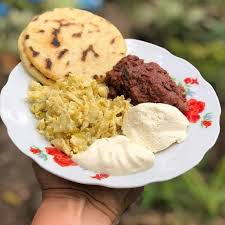

Restaurante y Comidas Valle Arriba
Sabor casero hondureño en el corazón del Valle Arriba. Desayunos, almuerzos y cenas preparados con ingredientes frescos cada día.
Ver Menú Completo Pedir a DomicilioNuestros Menús
Platos Recomendados

Sopa de Res
Con arroz, guineo y verduras.
L. 165
Pollo al Horno
Acompañado de arroz, ensalada y guineo hervido.
L. 180
Desayuno Típico
Huevos revueltos, frijoles molidos, tortillas de harina o maiz, queso, aguacate y mantequilla.
L. 130
Baleada Especial
Tortilla de harina con frijoles, queso, mantequilla y huevo.
L. 20Ver todos los recomendados